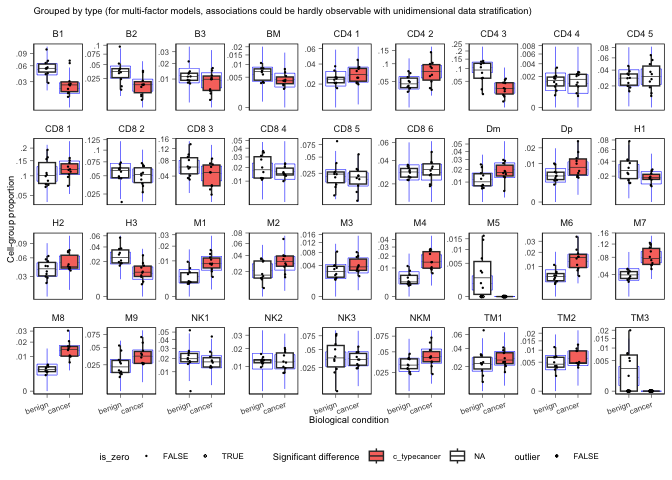

sccomp: Differential Composition and Variability Analysis for Single-Cell Data ================ Stefano Mangiola 2025-07-18
sccomp is a powerful R package designed for comprehensive differential composition and variability analysis in single-cell genomics, proteomics, and microbiomics data.
Why sccomp?
For cellular omic data, no method for differential variability analysis exists, and methods for differential composition analysis only take a few fundamental data properties into account. Here we introduce sccomp, a generalised method for differential composition and variability analyses capable of jointly modelling data count distribution, compositionality, group-specific variability, and proportion mean-variability association, while being robust to outliers.

Comprehensive Method Comparison
- I: Data are modelled as counts.
- II: Group proportions are modelled as compositional.
- III: The proportion variability is modelled as cell-type specific.
- IV: Information sharing across cell types, mean–variability association.
- V: Outlier detection or robustness.
- VI: Differential variability analysis.
- VII Mixed effect modelling
- VIII Removal unwanted effects
| Method | Year | Model | I | II | III | IV | V | VI | VII | VIII |
|---|---|---|---|---|---|---|---|---|---|---|
| sccomp | 2023 | Sum-constrained Beta-binomial | ● | ● | ● | ● | ● | ● | ● | ● |
| scCODA | 2021 | Dirichlet-multinomial | ● | ● | ||||||
| quasi-binom. | 2021 | Quasi-binomial | ● | ● | ||||||
| rlm | 2021 | Robust-log-linear | ● | ● | ||||||
| propeller | 2021 | Logit-linear + limma | ● | ● | ● | |||||
| ANCOM-BC | 2020 | Log-linear | ● | ● | ||||||
| corncob | 2020 | Beta-binomial | ● | ● | ||||||
| scDC | 2019 | Log-linear | ● | ● | ||||||
| dmbvs | 2017 | Dirichlet-multinomial | ● | ● | ||||||
| MixMC | 2016 | Zero-inflated Log-linear | ● | ● | ||||||
| ALDEx2 | 2014 | Dirichlet-multinomial | ● | ● |
Scientific Citation
Mangiola, Stefano, Alexandra J. Roth-Schulze, Marie Trussart, Enrique Zozaya-Valdés, Mengyao Ma, Zijie Gao, Alan F. Rubin, Terence P. Speed, Heejung Shim, and Anthony T. Papenfuss. 2023. “Sccomp: Robust Differential Composition and Variability Analysis for Single-Cell Data.” Proceedings of the National Academy of Sciences of the United States of America 120 (33): e2203828120. https://doi.org/10.1073/pnas.2203828120 PNAS - sccomp: Robust differential composition and variability analysis for single-cell data

Installation Guide
sccomp is based on cmdstanr which provides the latest version of cmdstan the Bayesian modelling tool. cmdstanr is not on CRAN, so we need to have 3 simple step process (that will be prompted to the user is forgot).
- R installation of
sccomp - R installation of
cmdstanr -
cmdstanrcall tocmdstaninstallation
Bioconductor
if (!requireNamespace("BiocManager")) install.packages("BiocManager")
# Step 1
BiocManager::install("sccomp")
# Step 2
install.packages("cmdstanr", repos = c("https://stan-dev.r-universe.dev/", getOption("repos")))
# Step 3
cmdstanr::check_cmdstan_toolchain(fix = TRUE) # Just checking system setting
cmdstanr::install_cmdstan()Github
# Step 1
devtools::install_github("MangiolaLaboratory/sccomp")
# Step 2
install.packages("cmdstanr", repos = c("https://stan-dev.r-universe.dev/", getOption("repos")))
# Step 3
cmdstanr::check_cmdstan_toolchain(fix = TRUE) # Just checking system setting
cmdstanr::install_cmdstan()Core Functions
| Function | Description |
|---|---|
sccomp_estimate |
Fit the model onto the data, and estimate the coefficients |
sccomp_remove_outliers |
Identify outliers probabilistically based on the model fit, and exclude them from the estimation |
sccomp_test |
Calculate the probability that the coefficients are outside the H0 interval (i.e. test_composition_above_logit_fold_change) |
sccomp_replicate |
Simulate data from the model, or part of the model |
sccomp_predict |
Predicts proportions, based on the model, or part of the model |
sccomp_remove_unwanted_effects |
Removes the variability for unwanted factors |
plot |
Plots summary plots to assess significance |
Analysis Tutorial
library(dplyr)
library(sccomp)
library(ggplot2)
library(forcats)
library(tidyr)
data("seurat_obj")
data("sce_obj")
data("counts_obj")Binary Factor Analysis
Of the output table, the estimate columns start with the prefix c_ indicate composition, or with v_ indicate variability (when formula_variability is set).
From Seurat, SingleCellExperiment, metadata objects
sccomp_result =
sce_obj |>
sccomp_estimate(
formula_composition = ~ type,
sample = "sample",
cell_group = "cell_group",
cores = 1,
verbose = FALSE
) |>
sccomp_test()From counts
sccomp_result =
counts_obj |>
sccomp_estimate(
formula_composition = ~ type,
sample = "sample",
cell_group = "cell_group",
abundance = "count",
cores = 1, verbose = FALSE
) |>
sccomp_test()Here you see the results of the fit, the effects of the factor on composition and variability. You also can see the uncertainty around those effects.
The output is a tibble containing the Following columns
-
cell_group- The cell groups being tested. -
parameter- The parameter being estimated from the design matrix described by the inputformula_compositionandformula_variability. -
factor- The covariate factor in the formula, if applicable (e.g., not present for Intercept or contrasts). -
c_lower- Lower (2.5%) quantile of the posterior distribution for a composition (c) parameter. -
c_effect- Mean of the posterior distribution for a composition (c) parameter. -
c_upper- Upper (97.5%) quantile of the posterior distribution for a composition (c) parameter. -
c_pH0- Probability of the null hypothesis (no difference) for a composition (c). This is not a p-value. -
c_FDR- False-discovery rate of the null hypothesis for a composition (c). -
v_lower- Lower (2.5%) quantile of the posterior distribution for a variability (v) parameter. -
v_effect- Mean of the posterior distribution for a variability (v) parameter. -
v_upper- Upper (97.5%) quantile of the posterior distribution for a variability (v) parameter. -
v_pH0- Probability of the null hypothesis for a variability (v). -
v_FDR- False-discovery rate of the null hypothesis for a variability (v). -
count_data- Nested input count data.
sccomp_result## sccomp model
## ============
##
## Model specifications:
## Family: multi_beta_binomial
## Composition formula: ~type
## Variability formula: ~1
## Inference method: pathfinder
##
## Data: Samples: 20 Cell groups: 36
##
## Column prefixes: c_ -> composition parameters v_ -> variability parameters
##
## Convergence diagnostics:
## For each parameter, n_eff is the effective sample size and R_k_hat is the potential
## scale reduction factor on split chains (at convergence, R_k_hat = 1).
##
## # A tibble: 72 × 19
## cell_group parameter factor c_lower c_effect c_upper c_pH0 c_FDR c_rhat
## <chr> <chr> <chr> <dbl> <dbl> <dbl> <dbl> <dbl> <dbl>
## 1 B1 (Intercept) <NA> 0.946 1.19 1.45 0 0 1.000
## 2 B1 typecancer type -0.927 -0.611 -0.288 7.50e-4 6.82e-5 1.000
## 3 B2 (Intercept) <NA> 0.507 0.765 1.04 0 0 1.00
## 4 B2 typecancer type -0.991 -0.669 -0.359 0 0 1.00
## 5 B3 (Intercept) <NA> -0.582 -0.331 -0.0661 4.17e-2 3.52e-3 1.00
## 6 B3 typecancer type -0.577 -0.280 0.0152 1.21e-1 2.47e-2 1.00
## 7 BM (Intercept) <NA> -1.23 -0.968 -0.716 0 0 1.00
## 8 BM typecancer type -0.587 -0.286 0.0191 1.14e-1 1.62e-2 1.00
## 9 CD4 1 (Intercept) <NA> 0.201 0.367 0.535 1.00e-3 7.00e-5 1.00
## 10 CD4 1 typecancer type -0.0129 0.205 0.410 1.67e-1 3.04e-2 1.00
## # ℹ 62 more rows
## # ℹ 10 more variables: c_ess_bulk <dbl>, c_ess_tail <dbl>, v_lower <dbl>,
## # v_effect <dbl>, v_upper <dbl>, v_pH0 <dbl>, v_FDR <dbl>, v_rhat <dbl>,
## # v_ess_bulk <dbl>, v_ess_tail <dbl>Outlier Identification
sccomp can identify outliers probabilistically and exclude them from the estimation.
sccomp_result =
counts_obj |>
sccomp_estimate(
formula_composition = ~ type,
sample = "sample",
cell_group = "cell_group",
abundance = "count",
cores = 1, verbose = FALSE
) |>
# max_sampling_iterations is used her to not exceed the maximum file size for GitHub action of 100Mb
sccomp_remove_outliers(cores = 1, verbose = FALSE, max_sampling_iterations = 2000) |> # Optional
sccomp_test()Visualization and Summary Plots
A plot of group proportions, faceted by groups. The blue boxplots represent the posterior predictive check. If the model is descriptively adequate for the data, the blue boxplots should roughly overlay the black boxplots, which represent the observed data. The outliers are coloured in red. A boxplot will be returned for every (discrete) covariate present in formula_composition. The colour coding represents the significant associations for composition and/or variability.
sccomp_result |>
sccomp_boxplot(factor = "type")## Running standalone generated quantities after 1 MCMC chain, with 1 thread(s) per chain...
##
## Chain 1 finished in 0.0 seconds.
You can plot proportions adjusted for unwanted effects. This is helpful especially for complex models, where multiple factors can significantly impact the proportions.
sccomp_result |>
sccomp_boxplot(factor = "type", remove_unwanted_effects = TRUE)## Running standalone generated quantities after 1 MCMC chain, with 1 thread(s) per chain...
##
## Chain 1 finished in 0.0 seconds.
## Running standalone generated quantities after 1 MCMC chain, with 1 thread(s) per chain...
##
## Chain 1 finished in 0.0 seconds.
## Running standalone generated quantities after 1 MCMC chain, with 1 thread(s) per chain...
##
## Chain 1 finished in 0.0 seconds.
A plot of estimates of differential composition (c_) on the x-axis and differential variability (v_) on the y-axis. The error bars represent 95% credible intervals. The dashed lines represent the minimal effect that the hypothesis test is based on. An effect is labelled as significant if it exceeds the minimal effect according to the 95% credible interval. Facets represent the covariates in the model.
sccomp_result |>
plot_1D_intervals()
We can plot the relationship between abundance and variability. As we can see below, they are positively correlated. sccomp models this relationship to obtain a shrinkage effect on the estimates of both the abundance and the variability. This shrinkage is adaptive as it is modelled jointly, thanks to Bayesian inference.
sccomp_result |>
plot_2D_intervals()
You can produce the series of plots calling the plot method.
sccomp_result |> plot() Model Proportions Directly (e.g. from deconvolution)
Note: If counts are available, we strongly discourage the use of proportions, as an important source of uncertainty (i.e., for rare groups/cell types) is not modeled.
The use of proportions is better suited for modelling deconvolution results (e.g., of bulk RNA data), in which case counts are not available.
Proportions should be greater than 0. Assuming that zeros derive from a precision threshold (e.g., deconvolution), zeros are converted to the smallest non-zero value.
sccomp_result =
counts_obj |>
sccomp_estimate(
formula_composition = ~ type,
sample = "sample",
cell_group = "cell_group",
abundance = "proportion",
cores = 1, verbose = FALSE
) |>
sccomp_test()Continuous Factor Analysis
sccomp is able to fit arbitrary complex models. In this example we have a continuous and binary covariate.
res =
seurat_obj |>
sccomp_estimate(
formula_composition = ~ type + continuous_covariate,
sample = "sample",
cell_group = "cell_group",
cores = 1, verbose=FALSE
)
res## sccomp model
## ============
##
## Model specifications:
## Family: multi_beta_binomial
## Composition formula: ~type + continuous_covariate
## Variability formula: ~1
## Inference method: pathfinder
##
## Data: Samples: 20 Cell groups: 30
##
## Column prefixes: c_ -> composition parameters v_ -> variability parameters
##
## Convergence diagnostics:
## For each parameter, n_eff is the effective sample size and R_k_hat is the potential
## scale reduction factor on split chains (at convergence, R_k_hat = 1).
##
## # A tibble: 90 × 15
## cell_group parameter factor c_lower c_effect c_upper c_rhat c_ess_bulk
## <chr> <chr> <chr> <dbl> <dbl> <dbl> <dbl> <dbl>
## 1 B immature (Interce… <NA> 0.567 0.834 1.11 1.00 3604.
## 2 B immature typeheal… type 1.02 1.35 1.67 1.000 3998.
## 3 B immature continuo… conti… -0.277 0.0479 0.373 1.000 3755.
## 4 B mem (Interce… <NA> -0.978 -0.674 -0.362 1.00 3907.
## 5 B mem typeheal… type 1.21 1.57 1.95 1.00 3564.
## 6 B mem continuo… conti… -0.275 0.0684 0.411 1.00 3928.
## 7 CD4 cm S100A4 (Interce… <NA> 1.33 1.55 1.79 1.00 3739.
## 8 CD4 cm S100A4 typeheal… type 0.859 1.13 1.40 1.00 4241.
## 9 CD4 cm S100A4 continuo… conti… -0.103 0.172 0.458 1.00 3766.
## 10 CD4 cm high cyto… (Interce… <NA> -0.923 -0.582 -0.242 1.000 4070.
## # ℹ 80 more rows
## # ℹ 7 more variables: c_ess_tail <dbl>, v_lower <dbl>, v_effect <dbl>,
## # v_upper <dbl>, v_rhat <dbl>, v_ess_bulk <dbl>, v_ess_tail <dbl>Random Effect Modeling (Mixed-Effect Modeling)
sccomp supports multilevel modeling by allowing the inclusion of random effects in the compositional and variability formulas. This is particularly useful when your data has hierarchical or grouped structures, such as measurements nested within subjects, batches, or experimental units. By incorporating random effects, sccomp can account for variability at different levels of your data, improving model fit and inference accuracy.
Random Intercept Model
In this example, we demonstrate how to fit a random intercept model using sccomp. We’ll model the cell-type proportions with both fixed effects (e.g., treatment) and random effects (e.g., subject-specific variability).
Here is the input data
seurat_obj[[]] |> as_tibble()## # A tibble: 106,297 × 9
## cell_group nCount_RNA nFeature_RNA group__ group__wrong sample type group2__
## <chr> <dbl> <int> <chr> <chr> <chr> <chr> <chr>
## 1 CD4 naive 0 0 GROUP1 1 SI-GA… canc… GROUP21
## 2 Mono clas… 0 0 GROUP1 1 SI-GA… canc… GROUP21
## 3 CD4 cm S1… 0 0 GROUP1 1 SI-GA… canc… GROUP21
## 4 B immature 0 0 GROUP1 1 SI-GA… canc… GROUP21
## 5 CD8 naive 0 0 GROUP1 1 SI-GA… canc… GROUP21
## 6 CD4 naive 0 0 GROUP1 1 SI-GA… canc… GROUP21
## 7 Mono clas… 0 0 GROUP1 1 SI-GA… canc… GROUP21
## 8 CD4 cm S1… 0 0 GROUP1 1 SI-GA… canc… GROUP21
## 9 CD4 cm hi… 0 0 GROUP1 1 SI-GA… canc… GROUP21
## 10 B immature 0 0 GROUP1 1 SI-GA… canc… GROUP21
## # ℹ 106,287 more rows
## # ℹ 1 more variable: continuous_covariate <dbl>
res =
seurat_obj |>
sccomp_estimate(
formula_composition = ~ type + (1 | group__),
sample = "sample",
cell_group = "cell_group",
bimodal_mean_variability_association = TRUE,
cores = 1, verbose = FALSE
)
res## sccomp model
## ============
##
## Model specifications:
## Family: multi_beta_binomial
## Composition formula: ~type + (1 | group__)
## Variability formula: ~1
## Inference method: pathfinder
##
## Data: Samples: 20 Cell groups: 30
##
## Column prefixes: c_ -> composition parameters v_ -> variability parameters
##
## Convergence diagnostics:
## For each parameter, n_eff is the effective sample size and R_k_hat is the potential
## scale reduction factor on split chains (at convergence, R_k_hat = 1).
##
## # A tibble: 180 × 15
## cell_group parameter factor c_lower c_effect c_upper c_rhat c_ess_bulk
## <chr> <chr> <chr> <dbl> <dbl> <dbl> <dbl> <dbl>
## 1 B immature (Intercept) <NA> 0.500 0.846 1.16 1.00 218.
## 2 B immature typehealthy type 0.755 1.21 1.65 1.00 115.
## 3 B immature (Intercept)___G… <NA> -0.320 0.0226 0.478 1.00 127.
## 4 B immature (Intercept)___G… <NA> -0.105 0.233 0.703 1.000 128.
## 5 B immature (Intercept)___G… <NA> -0.101 0.225 0.620 1.00 184.
## 6 B immature (Intercept)___G… <NA> -0.711 -0.288 0.0297 1.00 201.
## 7 B mem (Intercept) <NA> -0.857 -0.466 -0.0933 1.00 130.
## 8 B mem typehealthy type 0.797 1.27 1.78 1.00 103.
## 9 B mem (Intercept)___G… <NA> -0.469 0.0137 0.484 1.02 123.
## 10 B mem (Intercept)___G… <NA> -0.166 0.271 0.763 1.01 161.
## # ℹ 170 more rows
## # ℹ 7 more variables: c_ess_tail <dbl>, v_lower <dbl>, v_effect <dbl>,
## # v_upper <dbl>, v_rhat <dbl>, v_ess_bulk <dbl>, v_ess_tail <dbl>Random Effect Model (random slopes)
sccomp can model random slopes. We provide an example below.
res =
seurat_obj |>
sccomp_estimate(
formula_composition = ~ type + (type | group__),
sample = "sample",
cell_group = "cell_group",
bimodal_mean_variability_association = TRUE,
cores = 1, verbose = FALSE
)
res## sccomp model
## ============
##
## Model specifications:
## Family: multi_beta_binomial
## Composition formula: ~type + (type | group__)
## Variability formula: ~1
## Inference method: pathfinder
##
## Data: Samples: 20 Cell groups: 30
##
## Column prefixes: c_ -> composition parameters v_ -> variability parameters
##
## Convergence diagnostics:
## For each parameter, n_eff is the effective sample size and R_k_hat is the potential
## scale reduction factor on split chains (at convergence, R_k_hat = 1).
##
## # A tibble: 240 × 15
## cell_group parameter factor c_lower c_effect c_upper c_rhat c_ess_bulk
## <chr> <chr> <chr> <dbl> <dbl> <dbl> <dbl> <dbl>
## 1 B immature (Intercept) <NA> 0.466 0.836 1.20 1.01 135.
## 2 B immature typehealthy type 0.758 1.20 1.62 1.00 139.
## 3 B immature (Intercept)___G… <NA> -0.234 0.0271 0.331 1.00 235.
## 4 B immature typehealthy___G… <NA> -0.233 0.0139 0.330 1.02 127.
## 5 B immature (Intercept)___G… <NA> -0.179 0.142 0.488 1.08 11.3
## 6 B immature typehealthy___G… <NA> -0.140 0.0934 0.433 1.01 125.
## 7 B immature (Intercept)___G… <NA> -0.0735 0.197 0.535 1.02 119.
## 8 B immature (Intercept)___G… <NA> -0.675 -0.242 0.0492 1.00 111.
## 9 B mem (Intercept) <NA> -1.01 -0.568 -0.205 1.00 181.
## 10 B mem typehealthy type 0.902 1.35 1.89 1.01 113.
## # ℹ 230 more rows
## # ℹ 7 more variables: c_ess_tail <dbl>, v_lower <dbl>, v_effect <dbl>,
## # v_upper <dbl>, v_rhat <dbl>, v_ess_bulk <dbl>, v_ess_tail <dbl>Nested Random Effects
If you have a more complex hierarchy, such as measurements nested within subjects and subjects nested within batches, you can include multiple grouping variables. Here group2__ is nested within group__.
res =
seurat_obj |>
sccomp_estimate(
formula_composition = ~ type + (type | group__) + (1 | group2__),
sample = "sample",
cell_group = "cell_group",
bimodal_mean_variability_association = TRUE,
cores = 1, verbose = FALSE
)
res## sccomp model
## ============
##
## Model specifications:
## Family: multi_beta_binomial
## Composition formula: ~type + (type | group__) + (1 | group2__)
## Variability formula: ~1
## Inference method: pathfinder
##
## Data: Samples: 20 Cell groups: 30
##
## Column prefixes: c_ -> composition parameters v_ -> variability parameters
##
## Convergence diagnostics:
## For each parameter, n_eff is the effective sample size and R_k_hat is the potential
## scale reduction factor on split chains (at convergence, R_k_hat = 1).
##
## # A tibble: 300 × 15
## cell_group parameter factor c_lower c_effect c_upper c_rhat c_ess_bulk
## <chr> <chr> <chr> <dbl> <dbl> <dbl> <dbl> <dbl>
## 1 B immature (Intercept) <NA> 0.444 0.795 1.38 1.02 60.0
## 2 B immature typehealthy type 0.808 1.25 1.70 1.02 78.8
## 3 B immature (Intercept)___… <NA> -0.154 0.0833 0.450 1.01 93.5
## 4 B immature typehealthy___… <NA> -0.166 0.0629 0.431 1.01 84.9
## 5 B immature (Intercept)___… <NA> -0.205 0.0588 0.315 1.01 182.
## 6 B immature typehealthy___… <NA> -0.168 0.0513 0.342 1.01 157.
## 7 B immature (Intercept)___… <NA> -0.123 0.213 0.609 1.02 71.4
## 8 B immature (Intercept)___… <NA> -0.728 -0.256 0.0495 1.04 59.2
## 9 B immature (Intercept)___… <NA> -0.432 -0.105 0.141 1.01 111.
## 10 B immature (Intercept)___… <NA> -0.00115 0.233 0.584 1.00 76.6
## # ℹ 290 more rows
## # ℹ 7 more variables: c_ess_tail <dbl>, v_lower <dbl>, v_effect <dbl>,
## # v_upper <dbl>, v_rhat <dbl>, v_ess_bulk <dbl>, v_ess_tail <dbl>Result Interpretation and Communication
The estimated effects are expressed in the unconstrained space of the parameters, similar to differential expression analysis that expresses changes in terms of log fold change. However, for differences in proportion, logit fold change must be used, which is harder to interpret and understand.
Therefore, we provide a more intuitive proportional fold change that can be more easily understood. However, these cannot be used to infer significance (use sccomp_test() instead), and a lot of care must be taken given the nonlinearity of these measures (a 1-fold increase from 0.0001 to 0.0002 carries a different weight than a 1-fold increase from 0.4 to 0.8).
From your estimates, you can specify which effects you are interested in (this can be a subset of the full model if you wish to exclude unwanted effects), and the two points you would like to compare.
In the case of a categorical variable, the starting and ending points are categories.
res |>
sccomp_proportional_fold_change(
formula_composition = ~ type,
from = "healthy",
to = "cancer"
) |>
select(cell_group, statement)## Running standalone generated quantities after 1 MCMC chain, with 1 thread(s) per chain...
##
## Chain 1 finished in 0.0 seconds.
## # A tibble: 30 × 2
## cell_group statement
## <chr> <glue>
## 1 B immature 2.1-fold decrease (from 0.1105 to 0.0521)
## 2 B mem 2.4-fold decrease (from 0.0331 to 0.0136)
## 3 CD4 cm high cytokine 8-fold increase (from 0.0015 to 0.0121)
## 4 CD4 cm ribosome 3.7-fold increase (from 0.0072 to 0.0262)
## 5 CD4 cm S100A4 1.5-fold decrease (from 0.1497 to 0.1007)
## 6 CD4 em high cytokine 4.7-fold increase (from 0.0022 to 0.0105)
## 7 CD4 naive 1.5-fold decrease (from 0.1115 to 0.0748)
## 8 CD4 ribosome 3.1-fold decrease (from 0.085 to 0.0278)
## 9 CD8 em 1 1.2-fold increase (from 0.0485 to 0.0571)
## 10 CD8 em 2 3.9-fold increase (from 0.0053 to 0.0204)
## # ℹ 20 more rowsContrasts Analysis
seurat_obj |>
sccomp_estimate(
formula_composition = ~ 0 + type,
sample = "sample",
cell_group = "cell_group",
cores = 1, verbose = FALSE
) |>
sccomp_test( contrasts = c("typecancer - typehealthy", "typehealthy - typecancer"))## sccomp model
## ============
##
## Model specifications:
## Family: multi_beta_binomial
## Composition formula: ~0 + type
## Variability formula: ~1
## Inference method: pathfinder
##
## Data: Samples: 20 Cell groups: 30
##
## Column prefixes: c_ -> composition parameters v_ -> variability parameters
##
## Convergence diagnostics:
## For each parameter, n_eff is the effective sample size and R_k_hat is the potential
## scale reduction factor on split chains (at convergence, R_k_hat = 1).
##
## # A tibble: 60 × 11
## cell_group parameter factor c_lower c_effect c_upper c_pH0 c_FDR c_rhat
## <chr> <chr> <chr> <dbl> <dbl> <dbl> <dbl> <dbl> <dbl>
## 1 B immature typecanc… <NA> -1.90 -1.35 -0.810 0 0 NA
## 2 B immature typeheal… <NA> 0.810 1.35 1.90 0 0 NA
## 3 B mem typecanc… <NA> -2.24 -1.66 -1.04 0 0 NA
## 4 B mem typeheal… <NA> 1.04 1.66 2.24 0 0 NA
## 5 CD4 cm S100… typecanc… <NA> -1.46 -0.990 -0.512 2.50e-4 4.17e-5 NA
## 6 CD4 cm S100… typeheal… <NA> 0.512 0.990 1.46 2.50e-4 4.17e-5 NA
## 7 CD4 cm high… typecanc… <NA> 0.964 1.58 2.20 0 0 NA
## 8 CD4 cm high… typeheal… <NA> -2.20 -1.58 -0.964 0 0 NA
## 9 CD4 cm ribo… typecanc… <NA> 0.350 0.938 1.53 3. e-3 9.55e-4 NA
## 10 CD4 cm ribo… typeheal… <NA> -1.53 -0.938 -0.350 3. e-3 9.55e-4 NA
## # ℹ 50 more rows
## # ℹ 2 more variables: c_ess_bulk <dbl>, c_ess_tail <dbl>Categorical Factor Analysis (Bayesian ANOVA)
This is achieved through model comparison with loo. In the following example, the model with association with factors better fits the data compared to the baseline model with no factor association. For model comparisons sccomp_remove_outliers() must not be executed as the leave-one-out must work with the same amount of data, while outlier elimination does not guarantee it.
If elpd_diff is away from zero of > 5 se_diff difference of 5, we are confident that a model is better than the other reference. In this case, -79.9 / 11.5 = -6.9, therefore we can conclude that model one, the one with factor association, is better than model two.
library(loo)
# Fit first model
model_with_factor_association =
seurat_obj |>
sccomp_estimate(
formula_composition = ~ type,
sample = "sample",
cell_group = "cell_group",
inference_method = "hmc",
enable_loo = TRUE,
verbose = FALSE
)
# Fit second model
model_without_association =
seurat_obj |>
sccomp_estimate(
formula_composition = ~ 1,
sample = "sample",
cell_group = "cell_group",
inference_method = "hmc",
enable_loo = TRUE,
verbose = FALSE
)
# Compare models
loo_compare(
attr(model_with_factor_association, "fit")$loo(),
attr(model_without_association, "fit")$loo()
)Differential Variability Analysis
We can model the cell-group variability also dependent on the type, and so test differences in variability
res =
seurat_obj |>
sccomp_estimate(
formula_composition = ~ type,
formula_variability = ~ type,
sample = "sample",
cell_group = "cell_group",
cores = 1, verbose = FALSE
)
res## sccomp model
## ============
##
## Model specifications:
## Family: multi_beta_binomial
## Composition formula: ~type
## Variability formula: ~type
## Inference method: pathfinder
##
## Data: Samples: 20 Cell groups: 30
##
## Column prefixes: c_ -> composition parameters v_ -> variability parameters
##
## Convergence diagnostics:
## For each parameter, n_eff is the effective sample size and R_k_hat is the potential
## scale reduction factor on split chains (at convergence, R_k_hat = 1).
##
## # A tibble: 60 × 15
## cell_group parameter factor c_lower c_effect c_upper c_rhat c_ess_bulk
## <chr> <chr> <chr> <dbl> <dbl> <dbl> <dbl> <dbl>
## 1 B immature (Interce… <NA> 0.523 0.819 1.13 1.00 3685.
## 2 B immature typeheal… type 1.01 1.38 1.71 1.00 1873.
## 3 B mem (Interce… <NA> -1.07 -0.663 -0.270 1.00 206.
## 4 B mem typeheal… type 1.16 1.58 2.02 1.00 195.
## 5 CD4 cm S100A4 (Interce… <NA> 1.45 1.70 1.96 1.000 1206.
## 6 CD4 cm S100A4 typeheal… type 0.590 0.896 1.19 1.00 285.
## 7 CD4 cm high cyto… (Interce… <NA> -0.993 -0.605 -0.212 1.00 592.
## 8 CD4 cm high cyto… typeheal… type -1.90 -1.21 -0.553 1.00 62.8
## 9 CD4 cm ribosome (Interce… <NA> -0.0706 0.303 0.676 1.00 3661.
## 10 CD4 cm ribosome typeheal… type -1.34 -0.925 -0.496 1.00 891.
## # ℹ 50 more rows
## # ℹ 7 more variables: c_ess_tail <dbl>, v_lower <dbl>, v_effect <dbl>,
## # v_upper <dbl>, v_rhat <dbl>, v_ess_bulk <dbl>, v_ess_tail <dbl>Plot 1D significance plot
plots = res |> sccomp_test() |> plot()## Running standalone generated quantities after 1 MCMC chain, with 1 thread(s) per chain...
##
## Chain 1 finished in 0.0 seconds.
plots$credible_intervals_1D
Plot 2D significance plot Data points are cell groups. Error bars are the 95% credible interval. The dashed lines represent the default threshold fold change for which the probabilities (c_pH0, v_pH0) are calculated. pH0 of 0 represent the rejection of the null hypothesis that no effect is observed.
This plot is provided only if differential variability has been tested. The differential variability estimates are reliable only if the linear association between mean and variability for (intercept) (left-hand side facet) is satisfied. A scatterplot (besides the Intercept) is provided for each category of interest. For each category of interest, the composition and variability effects should be generally uncorrelated.
plots$credible_intervals_2D
Recommended Settings for Different Data Types
For Single-Cell RNA Sequencing
We recommend setting bimodal_mean_variability_association = TRUE. The bimodality of the mean-variability association can be confirmed from the plots$credible_intervals_2D (see below).
For CyTOF and Microbiome Data
We recommend setting bimodal_mean_variability_association = FALSE (Default).
MCMC Chain Visualization
It is possible to directly evaluate the posterior distribution. In this example, we plot the Monte Carlo chain for the slope parameter of the first cell type. We can see that it has converged and is negative with probability 1.
library(cmdstanr)
library(posterior)
library(bayesplot)
# Assuming res contains the fit object from cmdstanr
fit <- res |> attr("fit")
# Extract draws for 'beta[2,1]'
draws <- as_draws_array(fit$draws("beta[2,1]"))
# Create a traceplot for 'beta[2,1]'
mcmc_trace(draws, pars = "beta[2,1]") + theme_bw()
## R version 4.5.0 (2025-04-11)
## Platform: x86_64-apple-darwin20
## Running under: macOS Sonoma 14.6.1
##
## Matrix products: default
## BLAS: /Library/Frameworks/R.framework/Versions/4.5-x86_64/Resources/lib/libRblas.0.dylib
## LAPACK: /Library/Frameworks/R.framework/Versions/4.5-x86_64/Resources/lib/libRlapack.dylib; LAPACK version 3.12.1
##
## locale:
## [1] en_US.UTF-8/en_US.UTF-8/en_US.UTF-8/C/en_US.UTF-8/en_US.UTF-8
##
## time zone: Australia/Adelaide
## tzcode source: internal
##
## attached base packages:
## [1] stats graphics grDevices utils datasets methods base
##
## other attached packages:
## [1] bayesplot_1.12.0 posterior_1.6.1 cmdstanr_0.9.0 loo_2.8.0
## [5] tidyr_1.3.1 forcats_1.0.0 ggplot2_3.5.2.9001 sccomp_2.1.16
## [9] instantiate_0.2.3 dplyr_1.1.4
##
## loaded via a namespace (and not attached):
## [1] tidyselect_1.2.1 farver_2.1.2
## [3] S7_0.2.0 fastmap_1.2.0
## [5] SingleCellExperiment_1.30.1 tensorA_0.36.2.1
## [7] dotCall64_1.2 digest_0.6.37
## [9] lifecycle_1.0.4 SeuratObject_5.1.0
## [11] processx_3.8.6 magrittr_2.0.3
## [13] compiler_4.5.0 rlang_1.1.6
## [15] tools_4.5.0 utf8_1.2.6
## [17] yaml_2.3.10 data.table_1.17.8
## [19] knitr_1.50 S4Arrays_1.8.1
## [21] labeling_0.4.3 sp_2.2-0
## [23] DelayedArray_0.34.1 plyr_1.8.9
## [25] RColorBrewer_1.1-3 abind_1.4-8
## [27] withr_3.0.2 purrr_1.1.0
## [29] BiocGenerics_0.54.0 grid_4.5.0
## [31] stats4_4.5.0 future_1.58.0
## [33] progressr_0.15.1 globals_0.18.0
## [35] scales_1.4.0 SummarizedExperiment_1.38.1
## [37] cli_3.6.5 rmarkdown_2.29
## [39] crayon_1.5.3 generics_0.1.4
## [41] future.apply_1.20.0 rstudioapi_0.17.1
## [43] reshape2_1.4.4 httr_1.4.7
## [45] tzdb_0.5.0 stringr_1.5.1
## [47] parallel_4.5.0 XVector_0.48.0
## [49] matrixStats_1.5.0 vctrs_0.6.5
## [51] Matrix_1.7-3 jsonlite_2.0.0
## [53] callr_3.7.6 IRanges_2.42.0
## [55] hms_1.1.3 patchwork_1.3.1
## [57] S4Vectors_0.46.0 ggrepel_0.9.6
## [59] listenv_0.9.1 spam_2.11-1
## [61] glue_1.8.0 parallelly_1.45.0
## [63] codetools_0.2-20 ps_1.9.1
## [65] distributional_0.5.0 stringi_1.8.7
## [67] gtable_0.3.6 GenomeInfoDb_1.44.0
## [69] GenomicRanges_1.60.0 UCSC.utils_1.4.0
## [71] tibble_3.3.0 pillar_1.11.0
## [73] htmltools_0.5.8.1 GenomeInfoDbData_1.2.14
## [75] R6_2.6.1 rprojroot_2.1.0
## [77] evaluate_1.0.4 lattice_0.22-7
## [79] Biobase_2.68.0 readr_2.1.5
## [81] backports_1.5.0 Rcpp_1.1.0
## [83] SparseArray_1.8.0 checkmate_2.3.2
## [85] xfun_0.52 fs_1.6.6
## [87] MatrixGenerics_1.20.0 pkgconfig_2.0.3